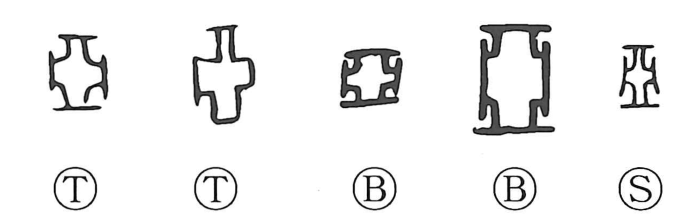

亜

Kun: | On: a
asia ・ sub- ・ secondary ・ next in rank
Explanation
Originally a pictograph of the plan of an underground tomb chamber: a regular square with its four corners pared away, thought to prevent malevolent spirits from hiding there. 亜 (ancient form 亞) came to denote the official responsible for burials and rites for the dead; powerful clans appointed such a person to oversee the tomb chamber and used emblems shaped like 亞, often incorporating the clan name, as a kind of family mark. Because this tomb-keeper bore sacred clerical duties, he stood second to the clan chief, which gave the character its sense of “next” or “second.” The related graph 堊 (“white earth”) refers to the kaolin with which the walls and ceilings of such chambers were originally painted.